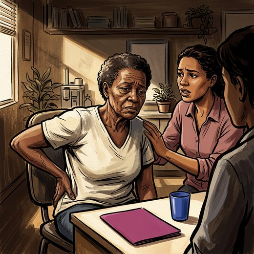

Consulta rápida à beira do leito
Condutas, doses e interações.
Referências da aula · 11
- Roccon PC, Andrade ACS, Coelho DM, et al. Neighborhood perception and depressive symptoms: the ELSI-Brasil national study. Rev Saude Publica. 2025;59:e42. PMID 41370515. doi:10.11606/s1518-8787.2025059006948.PubMedDOI
- American Psychiatric Association. Diagnostic and Statistical Manual of Mental Disorders, Fifth Edition, Text Revision (DSM-5-TR). Washington, DC: American Psychiatric Association Publishing; 2022.
- Taylor WD. Depression in the elderly. N Engl J Med. 2014;371(13):1228-36. PMID 25251617. doi:10.1056/NEJMcp1402180.PubMedDOI
- Alexopoulos GS. Depression in the elderly. Lancet. 2005;365(9475):1961-70. PMID 15936426. doi:10.1016/S0140-6736(05)66665-2.PubMedDOI
- Fiske A, Wetherell JL, Gatz M. Depression in older adults. Annu Rev Clin Psychol. 2009;5:363-89. PMID 19327033. doi:10.1146/annurev.clinpsy.032408.153621.PubMedDOI
- Kok RM, Reynolds CF 3rd. Management of depression in older adults: a review. JAMA. 2017;317(20):2114-22. PMID 28535241. doi:10.1001/jama.2017.5706.PubMedDOI
- Whooley MA, Avins AL, Miranda J, Browner WS. Case-finding instruments for depression. Two questions are as good as many. J Gen Intern Med. 1997;12(7):439-45. PMID 9229283. doi:10.1046/j.1525-1497.1997.00076.x.PubMedDOI
- Kroenke K, Spitzer RL, Williams JB. The Patient Health Questionnaire-2: validity of a two-item depression screener. Med Care. 2003;41(11):1284-92. PMID 14583691. doi:10.1097/01.MLR.0000093487.78664.3C.PubMedDOI
- Livingston G, Huntley J, Liu KY, Costafreda SG, Selbæk G, Alladi S, et al. Dementia prevention, intervention, and care: 2024 report of the Lancet standing Commission. Lancet. 2024;404(10452):572-628. PMID 39096926. doi:10.1016/S0140-6736(24)01296-0.PubMedDOI
- Diniz BS, Butters MA, Albert SM, Dew MA, Reynolds CF 3rd. Late-life depression and risk of vascular dementia and Alzheimer's disease: systematic review and meta-analysis of community-based cohort studies. Br J Psychiatry. 2013;202(5):329-35. PMID 23637108. doi:10.1192/bjp.bp.112.118307.PubMedDOI
- World Health Organization. Depressive disorder (depression) [fact sheet]. Geneva: WHO; atualizada em 11 set 2026.